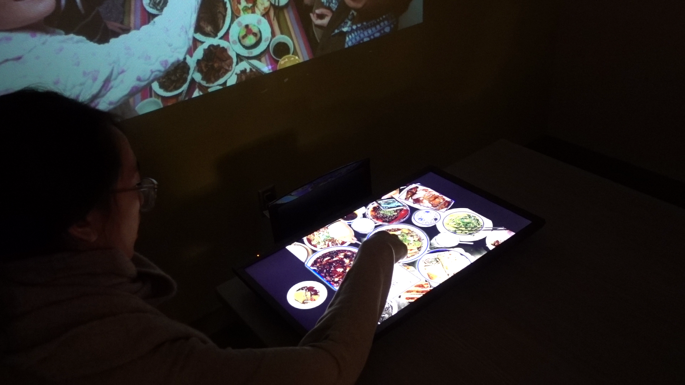
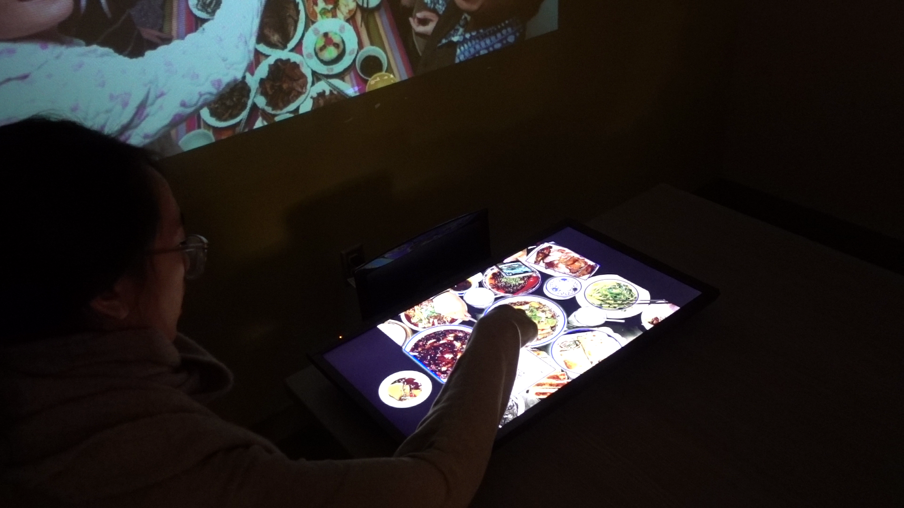
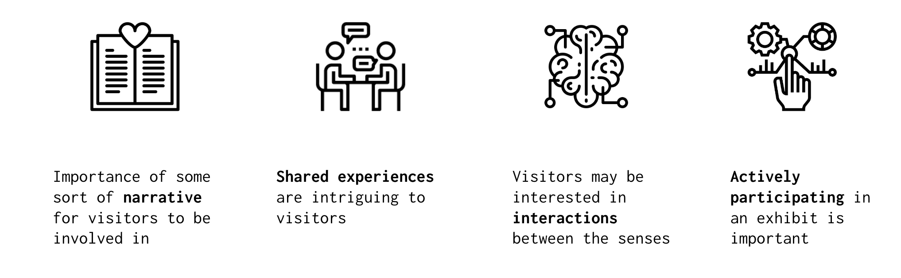
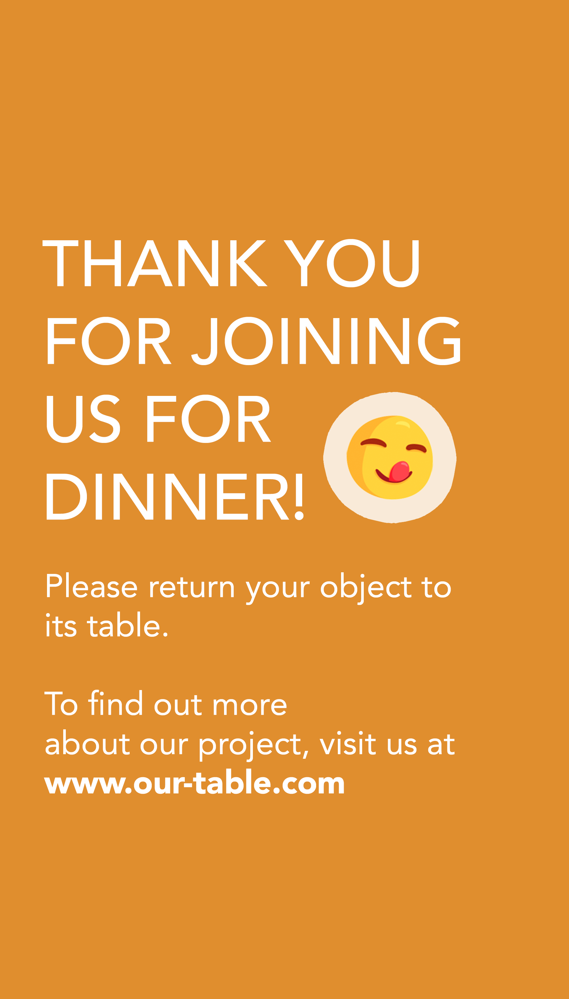
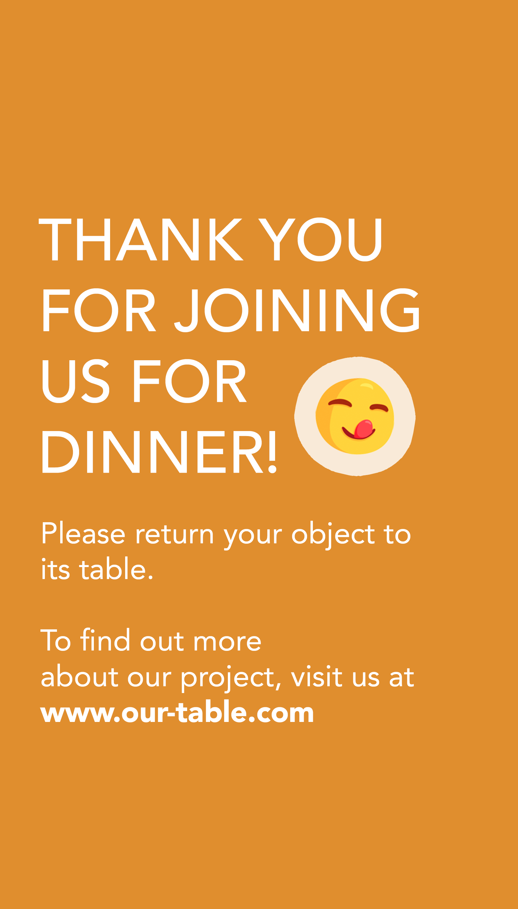

A Seat at Our Table: An Interactive Exhibit
Role: UX Designer & Researcher
A touchscreen table prototype for experiencing holiday celebrations in the United States through the lenses of (our) three cultures and their respective "hyphenated" national identities.
 

Beginnings, Research, and Brainstorming
As part of our User Experience Master Course, my team and I were tasked with developing a semester-long design project in the form of an interactive museum exhibit that intervened with a contemporary social, political, and/or economic issue.
Our initial set of ideas revolved around producing creative sensory experiences with inputs from visitors. We then conducted design research for audience and context in order to help us narrow our vision.
Comparative Analysis
In order to gain an understanding of the current museum landscape, my team and I looked at three categories of museums (art, natural history, and speciality) with a focus on their exhibit offerings, visitation patterns and reviews, and any common themes and practices that would contribute to our understanding of exhibit purposes and appeal.
Interviews
Three rounds of interviews were conducted for contextual inquiry, expert opinions, and general feedback and critique from our peers. We talked to recent museum visitors, museum staff, professors in the departments of Psychology and Information.
Brainstorming Sessions
At our meetings, we analysed data from our design research and used our findings to open up discussion and to brainstorm and develop new concepts for our exhibit. We designed user story maps to fine-tune and visualize potential ideas we wanted to move forward with.
Key Findings
Using the feedback we were provided, we began to discuss how our senses have an impact on our experiences within our own cultures, largely through festive meals and other holiday celebrations. We felt that this idea could cohesively tie together our sensory explorations.
Honing in on this theme lent our exhibit more of a personal touch by studying our personal "hyphenated" identities. Within our group, we have representations of Taiwanese-American, Chinese-American, Indian-American, and Jewish-American. Questions we wanted to explore included: which “side” of the hyphen did we belong to? Or on what basis should we view our identities as hyphenated in the first place? We were interested in contextualizing our at-home lives, rituals, and languages with museum visitors on a more personal level.
From there, we based our exhibit around festive meals in our hyphenated cultures that would allow the chance to tell our personal stories of what it is like, as well as having the opportunity for visitors to participate.
Exhibit Design
Taking inspiration from a Japanese tea ceremony table (created by Tellart) at the Detroit Institute of Art, our final design consisted of an interactive table with a touchscreen that triggered an experience based on the placement of a specific physical object, symbolic of a specific holiday as chosen by the user.

Pictured above: Sketching out a (preliminary) storyboard for the user's overall exhibit experience, from finding the room to sitting down & experiencing it. One of several iterations.
Our prototype explored three holidays (Lunar New Year, Passover, and Christmas) as our families would celebrate them at our homes in the United States.
This experience was auditory and visual in nature: users could tap a dish or item depicted on the table to find out our thoughts about it, or to hear quiet discussions about its place in our life and/or its cultural meanings. A QR code leads to an online recipe for the dish, if applicable.
 

Video Summary
---
Created with Jill Davidson, Harsh Desai, Amanda Jung, and Annabelle Tsai.